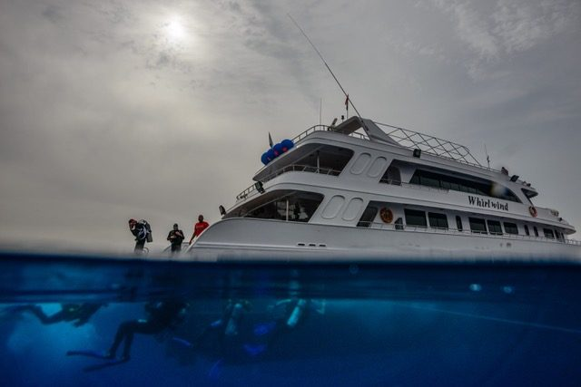
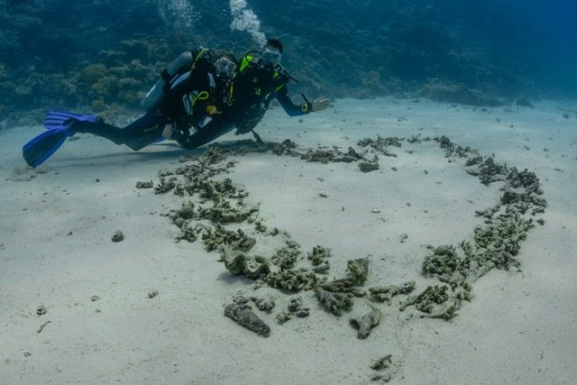
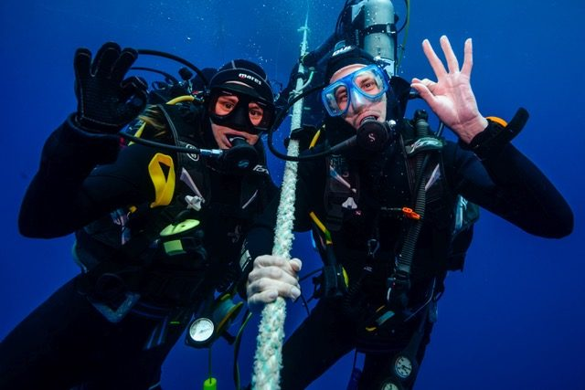
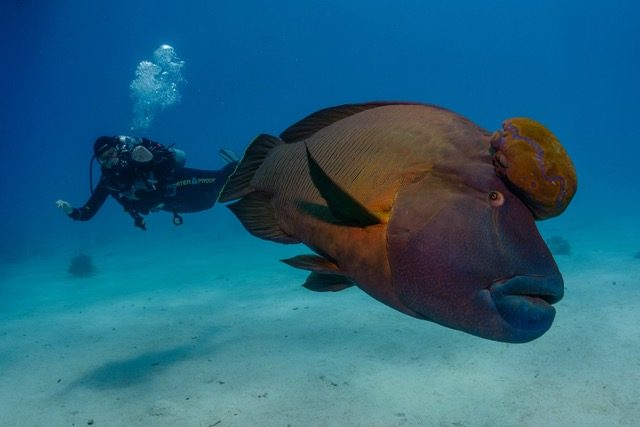

Red Sea 2018
Twelve Argonauts, with kit, flew to the North Red Sea in May 2018 for a very memorable six days of diving aboard the good ship Whirlwind booked via Scuba Travel.

We had a packed itinerary with the possibility of four dives per day including a daily night dive. We thus all chose to dive on Nitrox to ensure that we could get maximum value out of the possible 22 dives. Highlights of the trip were seeing dolphins (one doing a victory roll in front of us), a heart made of stones on the sea bed left after an undersea wedding, several trips to the Thistlegorm (both outside and inside) and to also to the Giannis D.


There was some great wall diving with an abundance of both flora and fauna including a Spanish Dancer, lobsters, blue spotted rays, stone fish, moray eels, puffer fish, leaf fish, octopus, napoleon trigger fish, turtles, bat fish and a white tipped reef shark.

Aside from diving we developed the new sport of "fin cricket” played between those on the boat’s dive platform (with a fin) and those in the water (bowlers and fielders) This was a great trip that was thoroughly enjoyed by all. All, bar one, of the photos are courtesy of Tom Pepper and you can see more of his work onwww.tompepperphotography.comor on instagram @tompepperphotography
By Alex